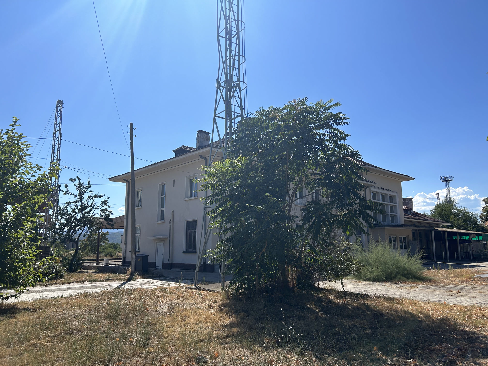
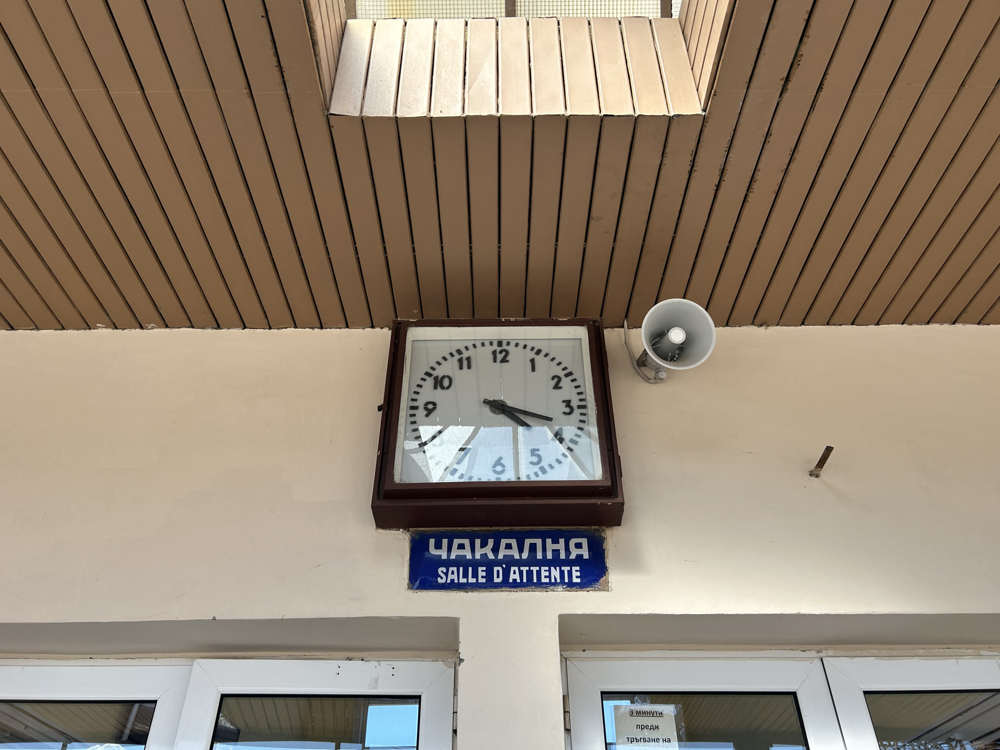
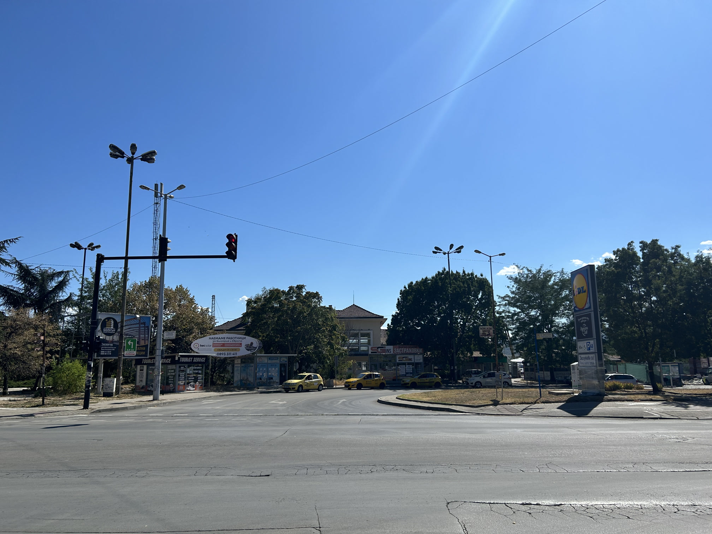
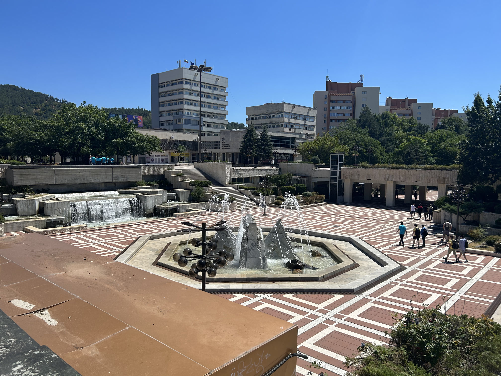
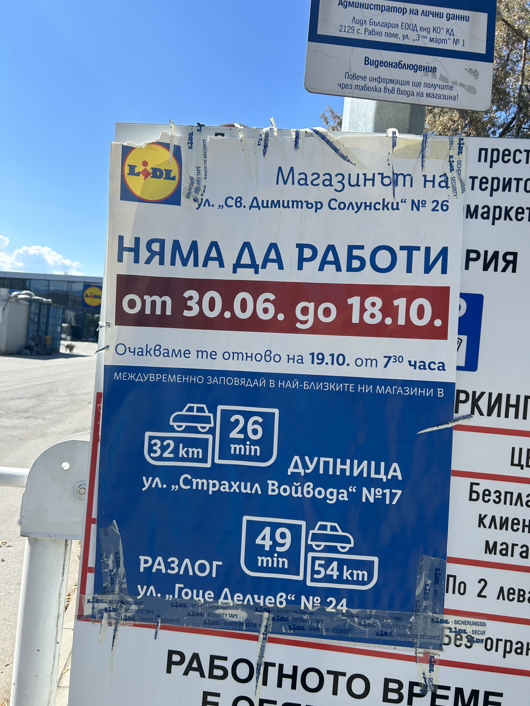
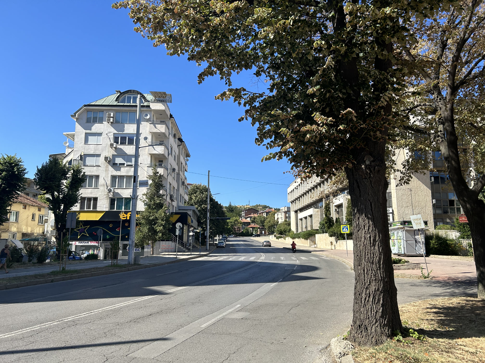
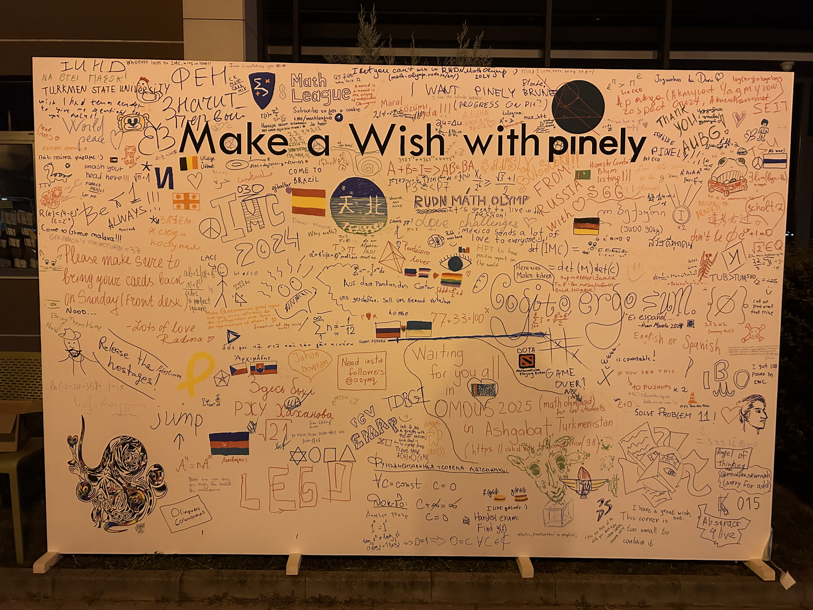

仍然是相似的生物钟，仍然是相似的早餐。但我今天似乎做出了更多的题目，于是出考场后自我感觉良好，觉得可以够到银牌——虽然后来发现，有一道题步骤错误；而失去的分数，刚好是最终成绩离银牌的分数差。
It was still similar routine and breakfast. But it seemed I had more problems solved, and thus I felt very well after the exam, expecting to get a silver. But in fact there was a wrong step in a "feel-good" question, and the points lost were exactly the difference between my final score and the threshold of silver.
题目如下（依然进行转述）：
The problems are as follows (For original English verson, please see IMC Official Site.)
6. 证明：对任何从有理数域映射到整数域的函数 f，存在有理数 a, b, c，使得 c > b > a 且 f(b) >= f(a) 且 f(b) >= f(c)．
7. 令 n 为正整数．考虑 n 行 n 列可逆复数矩阵 A 与 B，满足 A + B = I，(A^2 + B^2) (A^4 + B^4) = A^5 + B^5，求 det(AB) 的所有可能值．
8. 定义数列 x_1, x_2, ... 如下：x_1 = 2，x_2 = 4，对所有正整数 n，x_(n+2) = 3x_(n+1) - 2x_n + (2^n)/(x_n) 成立．证明：当 n 趋于正无穷时，(x_n)/(2^n) 的极限（记为 L）存在，且 3/2 >= L >= (1 + sqrt(3))/2．
9. 一个矩阵（记为 A）被称为“好的”，当且仅当其满足以下条件：第一，存在正整数 t，使得 A 的所有元素构成集合 {1, 2, ..., 2t}；第二，矩阵每行及每列的后一个元素不小于前一个元素；第三，相同的元素只能出现在同一行或同一列；第四，对每个 s = 1, 2, ..., 2t-1，存在不同的正整数 i, k，不同的正整数 j, l，使得 A 的第 i 行第 j 列的元素等于 s，第 k 行第 l 列的元素等于 s + 1．求证：对于任意正整数 m 与 n，都有且仅有偶数个“好的” m 行 n 列矩阵．
10. 如果一个正整数不能被任一大于 1 的完全平方数整除，那么我们称这个数为“无方”．如果一个无方数 n 满足对所有整数 x，n 整除 (x^(d_1) + x^(d_2) + ... + x^(d_k) - kx)，其中 k = d_k > ... > d_2 > d_1 = 1 为 n 的所有正因子，那么 n 被称为“不质”．考虑一个费马素数 r（亦即 r 为素数且存在非负整数 m 使得 r = 2^(2^m) + 1），不质数 n 的一个素数因子 p，满足 p ≡ 1 (mod r)．求证：按照以上记号，对于所有 i = 1, 2, ..., k，d_i ≡ 1 (mod r)．
考完试后我才得知，我的室友，也是同校队员，由于身体不适，提前交卷出了考场。而从他那里我又得知，另一位同校队员这两天一直如此。但这两位水土不服最严重的队员，在平时的训练中展现了比我强得多的知识储备和本领。但这种情况下，先不提对成绩的影响了！从医生家庭出来的我对医学一无所知，只能尽快与带队老师报告。我的室友拿到了药，于是在宿舍里休养，而另一位已经被出租车送往医院了。
It was not until the end of the exam that I knew my dormmate from the same university handed in the paper in advance due to bad health. And from him I knew that another member from the same university had the same issue for both exam days. Both members have stronger knowledge base and problem solving skills than me, but we can't care about scores now. I have no idea about anything medical, although born in a family of doctors. Thus I could only report this to the team leader. As a result, my dormmate had a rest at the dormitary with some medicine, but another person was carried to the hospital by taxi.
除了时不时在网上问一下情况之外，我实在帮不了太多。晚上 Pinely 举行的派对，希望他们的身体条件能够允许参加。
I could not do much other than asking them about their health online. I hope their health could permit them to join the night party by Pinely.
如果不是身体不适，谁会好不容易出了国却一直待在住处呢？没多久，我就发现我又来到了火车站。站房位于铁路北侧，而站房的北侧是两条主干道形成的丁字路口，带环岛。对于淄博市出身的我来说，这有一种到家的感觉——因为，淄博火车站北广场在 2022 年改造前就是这样！
If not due to health issue, who would keep staying in accommodation on a short trip abroad? I found myself at the railway station again a while after. The station building located at the north side of rail tracks, and the north of the station building is a T-junction with a roundabout. For me who is from Zibo, it made me feel of home - the north side of Zibo Railway Station was exactly the same before 2022!



但是我并未在火车站进行过多停留，而是继续往北走。途中路过一个小店，我进去买冷饮时，店员惊讶地问我从哪里来。我回答“中国”，她“哇”地一声惊叹。这可能是她现实中第一次碰见中国人吧！
But I did not stay for too long at the railway station, but headed further north. When I bought some ice cream in a small shop, the shop keeper asked me where I was from, surprised. When I answered "China", she was astonished by a "wow". It may be her first time to encounter a Chinese person in real life!
结果，向北走了走，发现我又回到了考试地点——AUBG 教学楼。于是我直接沿着从生活区去教学楼的反方向返回，但却在最繁华的商业街上又碰到了队员——在商场买东西！虽然我对衣服和化妆品一点儿都不感兴趣，但是街上有一家纪念品店把“所有 IMC 参赛者九折”贴在了最显眼处。虽然里面的商品一看就是“中国制造”，但是，如果不是来保加利亚，谁会买这些“家乡货”呢？
Heading further north resulted going back to the place of exam, AUBG. I started to go back to Skaptopara, but encountered team members again on the high street - they were shopping in the mall! Although I had no interest about clothes or costume stuff, there was a souvenir shop advertising "10% Off for All IMC Participants". Although all souvenirs it sold were apparantly "made in China", who will buy these things if not coming to Bulgaria?



晚上的派对，我的舍友参加了，但是另外一名队员还需休养。派对在学生活动中心室外，提供香肠、鸡胸肉串、薯条、沙拉、面包等作为晚餐，还有非常多的饮料。但是作为素食者的带队老师对提供的菜品不满意。然而，比起餐饮，这种派对更重要的是尽情玩耍！这些学生一点不像“书呆子”，即使他们学的是数学。DJ 大声放音乐，大家盘腿坐着聊天，或者是解决 Pinely 的有奖智力谜题。
My dormmate joined the evening party, but another member had to rest further. The party was held outside of the student centre, offering dinner such as sausages, chicken breast kebab, potato chips, salad, and bread, and a wide selection of soft drinks. But the team leader as a vegetarian did not satisfy that. However, such party matters much more on enjoying the activities. These students are definitely not those who know nothing outside of studying, even though they study mathematics! With loud music, we sit on the ground, chatting, or try to solve awarded problems offered by Pinely.
派对上有一块签名板，大家写满了美好祝愿：“俄罗斯爱着乌克兰”，“释放巴勒斯坦难民”，“欢迎来土库曼斯坦参加数学竞赛”……还有人画画，而绘画技术拙劣的我自告奋勇，在正中间描画了日本国铁天北线（现已废线）急行“天北”的 Logo。由于准备竞赛，我本打算的暑假计划（北海道废线考察）并未实现，但竞赛更有意思！
There was a signature board on the party, filled by good wishes from participants: "Russia loves Ukraine", "Free Palestine refugees", "Welcome to Turkmenistan to participate in Mathematical Olympiad"... There were even drawings, and despite bad drawing skills, I drew something in the middle of the board. It is the logo of express "Tempoku" operated on Tempoku Line (now abandoned) by Japanese National Railways. My initial summer plan, which was investigation on abandoned lines in Hokkaido, did not come true due to mathematical competition preparation. But this was more fun!

大家尽兴而归，但我睡不着，因为考试后接着阅卷评分，明早前就能出成绩！每看完一个题，IMC 官网上就会放出全体参赛者这个题的得分。昨天的分数已于今早公布——第一题 10 分，第二题 7 分，总计 17 分。这使获奖成为一种悬念：如果今天的解答过程没有出问题，那么总分可以达到 40 分以上；然而，数学考试最怕的就是意识不到的过程错误……在闷热的宿舍里，我焦虑不安，但最终还是睡着了。
All returned to dorm with happiness, but I did not feel sleepy at all, since the marking had started from the end of the exam, and the scores would be revealed tomorrow. Once all participants' attempts of a question have been reviewed and marked, the results of this question would be revealed on the IMC official website. The results yesterday had been published by this morning - I got ten in Question 1, and seven in Question 2, thus seventeen in total. This made a prize a mystery; if my procedure of answers were all right, my total marks could exceed 40, but unconscious mistakes are something everyone fears, especially for exams of mathematics. I felt anxious, but eventually fell asleep in the hot dorm.
……
凌晨一点钟，舍友的健康仍然没有恢复，我被吵醒了。一看楼下，灯火通明，人头攒动，极其喧闹！原来大家考完试都在狂欢，丝毫没被等待成绩的焦虑影响——或者说，既然睡不着，不如开心点！我也下去了。地中海的夏天仍然热不过中国东部——即使白天又热又晒，晚上仍然是凉爽干燥。宿舍楼里有很多人，外面还有很多人，全部神采奕奕，或是打牌或是热烈交谈。但我最关心的是成绩！打开网站一看，第八题公布了——7 分，没多久第六题公布了——9 分，这些都还不错。可是，第七题的分数迟迟没有公布。究竟是多少分呢？我觉得我的步骤是一点问题都没有的。我一直刷新到凌晨三点半，怀着“满分”的假设在大厅的躺椅上睡着了。
The health condition of my dormmate was still bad at 1 AM, and I was waken. It was still bright, crowded, and noisy downward! It turned out that they were all still partying after the exam, without any anxiety for the scores - or there was, but why not have party if you cannot fall asleep for whatever reason? I came down too. The summer of Mediterranean areas is no hotter than Eastern China, and although it is very hot and sunny during the day, it will become cooler and drier at night. There were many participants inside and outside of the building, all with excitement, playing card games or talking loud. But I only cared about scores. The website showed my score of Question 8 - seven, and a while after Question 6 - nine, which were good. But the scores for Question 7 was still not revealed. How much can I get? I thought my procedure could not be wrong. With hypothesis of "ten", I kept refreshing the page, awake until 3:30 AM.
TOP | 1 | 2 | 3 | 4 | 5 | 6 | 7